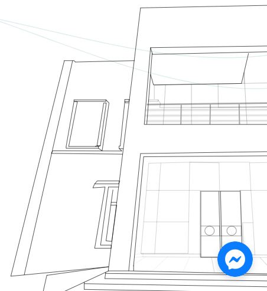

Housed in Karachi’s NED University Campus, NIC Karachi is an Ignite-funded and LMKT-operated incubation center dedicated to fostering economic development in Sindh and Pakistan. NIC Karachi is supported by leading organizations such as HBL, PTCL, PPAF, Founder Institute, and i2i, and started operations in May 2018. Since then, NIC Karachi has successfully inducted over 250+ startups into its Incubation and Acceleration programs. As a startup accelerator, we provide a comprehensive range of resources and support to talented entrepreneurs and promising startups from the Sindh region. We offer mentorship, training, access to funding, and technical resources to help create high-growth and sustainable businesses. We incubate tech and tech-enabled startups from various industries, including education, agriculture, commerce, waste disposal, robotics and more. Our goal is to establish a thriving entrepreneurial ecosystem in Pakistan where startups can connect and grow. Join us on our road to prosperity and contribute to our endeavor to bring innovation and wealth to Pakistan.
